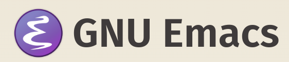
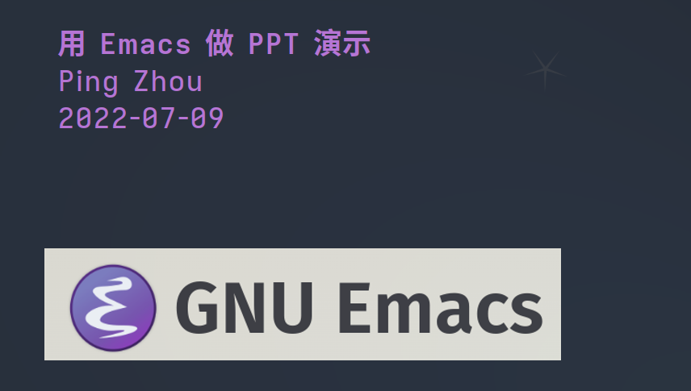
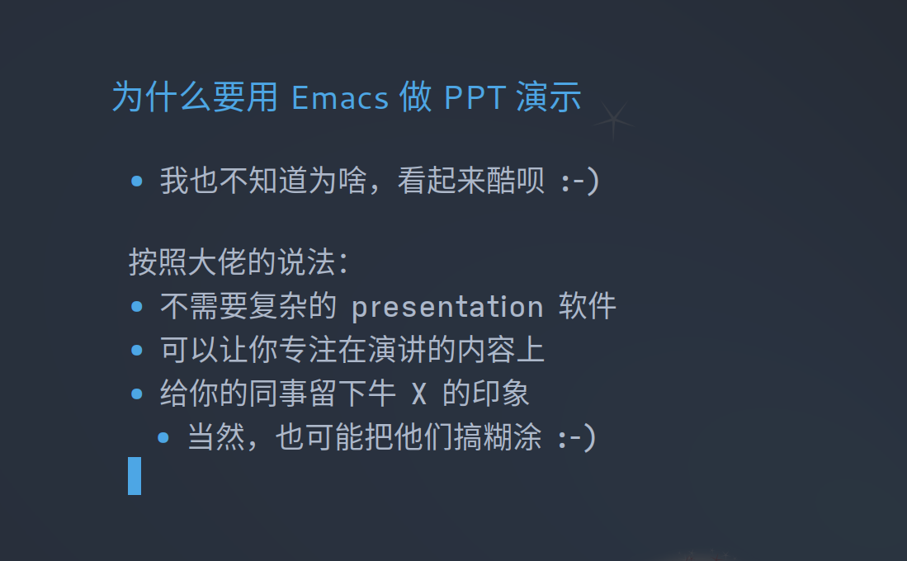
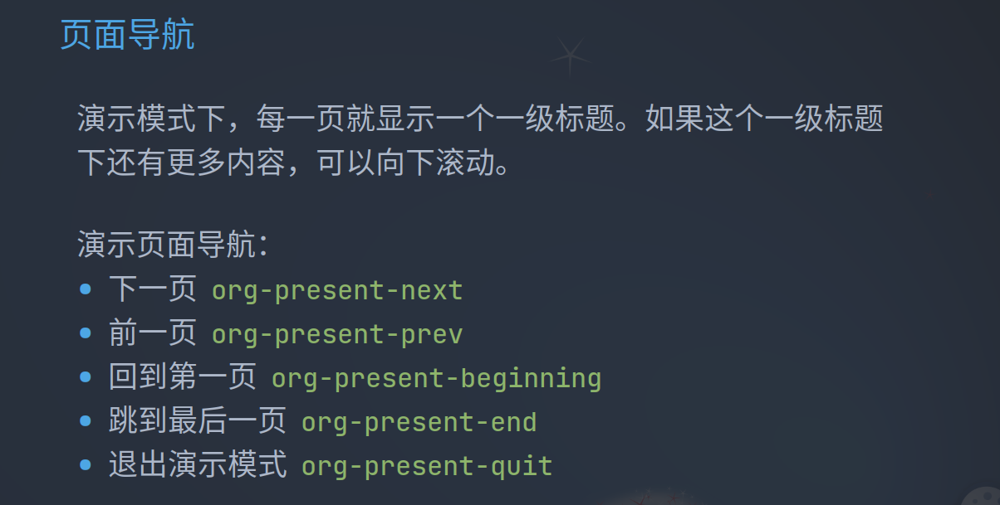
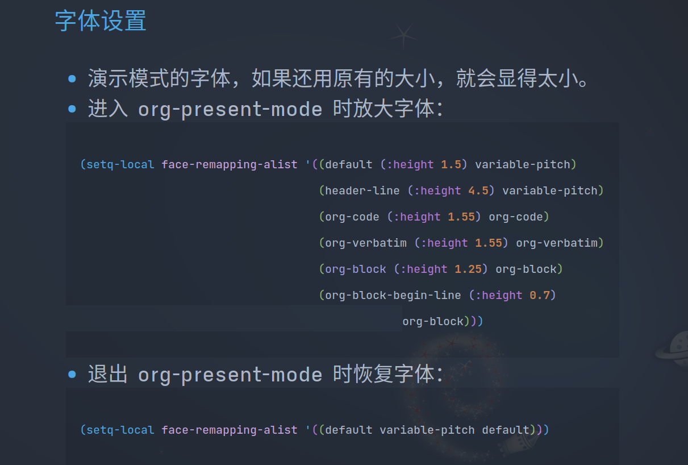

用Emacs做PPT演示
Ping Zhou, 2022-07-09

为什么要用 Emacs 做 PPT 演示
- 我也不知道为啥，看起来酷呗 :-)
按照大佬的说法：
- 不需要复杂的 presentation 软件
- 可以让你专注在演讲的内容上
- 给你的同事留下牛 X 的印象
- 当然，也可能把他们搞糊涂 :-)
安装 org-present 包
如果是 Doom Emacs，它已经自带了 org-present 支持，只需要打开即可。打开 .doom.d/init.el ，在 org 那栏加上 present 即可：
(doom! :input ;; ...... :lang ;; ...... (org ; organize your plain life in plain text ;; ...... +present +pretty +roam2) ;; ......
如果是用自己的配置，用 use-package 或者手动安装即可。
开始演示
- 进入演示模式
org-present - 第一页就是 org 文件的 title 和第一个一级标题之间的内容
页面导航
演示模式下，每一页就显示一个一级标题。如果这个一级标题下还有更多内容，可以向下滚动。
演示页面导航：
- 下一页
org-present-next - 前一页
org-present-prev - 回到第一页
org-present-beginning - 跳到最后一页
org-present-end - 退出演示模式
org-present-quit
字体设置
- 演示模式的字体，如果还用原有的大小，就会显得太小。
- 进入 org-present-mode 时放大字体 (
org-present-mode-hook)：
(setq-local face-remapping-alist '((default (:height 1.5) variable-pitch) (header-line (:height 4.5) variable-pitch) (org-code (:height 1.55) org-code) (org-verbatim (:height 1.55) org-verbatim) (org-block (:height 1.25) org-block) (org-block-begin-line (:height 0.7) org-block)))
- 退出 org-present-mode 时恢复字体 (
org-present-mode-quit-hook)：
(setq-local face-remapping-alist '((default variable-pitch default)))
其他设置
- 演示模式时关闭菜单条、工具条和滚动条
(menu-bar-mode 0) (tool-bar-mode 0) (scroll-bar-mode 0)
半透明背景
- Emacs 还可以把背景设为半透明
(set-frame-parameter (selected-frame) 'alpha '(97 . 100)) (add-to-list 'default-frame-alist '(alpha . (90 . 90)))
效果演示



